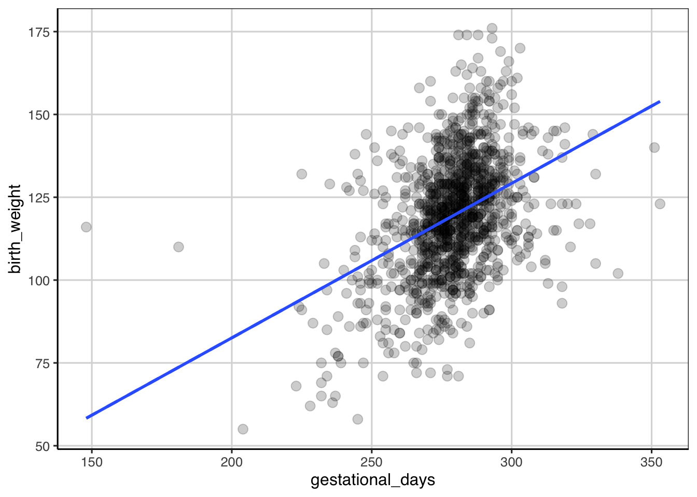
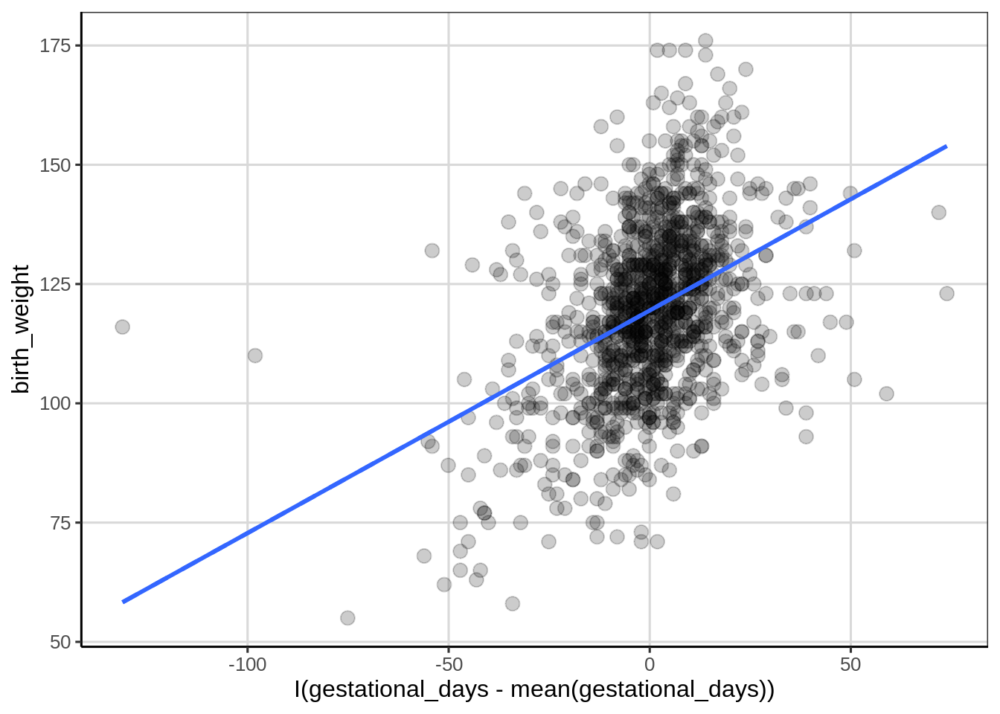

Chapter 6 Linear Model
6.1 Regression Trees
In this example, data on major league baseball players that comes with an R package, ISLR. These data contain information about hitters in major league baseball for the 1986 season and also contain information about their starting salary for the 1987 season. Missing data related to salary information was dropped from the data. ### Loading R packages hen the packages can be loaded and some processing is done on the Hitters data to drop any missing data elements from the salary data attribute. Finally, the first few rows of the data are shown with the head() function.
library(tidyverse)
library(ggformula)
library(mosaic)
library(ISLR)
library(rpart)
library(rsample)
library(rpart.plot)
library(statthink)
# Set theme for plots
theme_set(theme_statthinking())
Hitters <- Hitters %>%
drop_na(Salary)
head(Hitters)## AtBat Hits HmRun Runs RBI Walks Years CAtBat CHits CHmRun
## -Alan Ashby 315 81 7 24 38 39 14 3449 835 69
## -Alvin Davis 479 130 18 66 72 76 3 1624 457 63
## -Andre Dawson 496 141 20 65 78 37 11 5628 1575 225
## -Andres Galarraga 321 87 10 39 42 30 2 396 101 12
## -Alfredo Griffin 594 169 4 74 51 35 11 4408 1133 19
## -Al Newman 185 37 1 23 8 21 2 214 42 1
## CRuns CRBI CWalks League Division PutOuts Assists Errors
## -Alan Ashby 321 414 375 N W 632 43 10
## -Alvin Davis 224 266 263 A W 880 82 14
## -Andre Dawson 828 838 354 N E 200 11 3
## -Andres Galarraga 48 46 33 N E 805 40 4
## -Alfredo Griffin 501 336 194 A W 282 421 25
## -Al Newman 30 9 24 N E 76 127 7
## Salary NewLeague
## -Alan Ashby 475.0 N
## -Alvin Davis 480.0 A
## -Andre Dawson 500.0 N
## -Andres Galarraga 91.5 N
## -Alfredo Griffin 750.0 A
## -Al Newman 70.0 A6.1.1 Visualize distributions
Exploring the distribution of the variable of interest is often the first step in an analysis. Here, we are interested in exploring the distribution of salaries of major league baseball players and seeing if data attributes can help to predict the salary for the player. The first plot explored is the density of the salary variable.
gf_density(~ Salary, data = Hitters)
- What are some features of the distribution above?
- Could there be some concerns about this distribution if we are looking to do some analysis on this?
In general, symmetric distributions are preferred over skewed distributions and some models make an assumption of normality, a special type of symmetric distribution. One way to help make a skewed distribution more symmetric is to transform the data. For a positively skewed distribution, such as income, rent, salary, etc, a log transformation is a common transformation that is used by econometricians and is a meaningful transformation. The largest downside of the transformation is that the original metric is lost and the analysis is done on the transformed metric. The log transformation identified above is often referred to as a non-linear transformation such that it alters values differently based on where these are on the scale. For example, the log transformation will minimize gaps that are higher up on the scale and spread out gaps in small values, this is why this type of transformation is common for right or positively skewed data. Below is a figure applying the log transformation to the salary attribute.
gf_density(~ log(Salary), data = Hitters) ### Explore relationships between two quantitative attributes So far, the course has focused on exploring relationships between a quantitative and various qualitative (i.e. categorical or grouping) attributes. It is also common to want to explore relationships between two quantitative attributes. One way to visualize this type of relationship is with a scatterplot and this can be done with the
### Explore relationships between two quantitative attributes So far, the course has focused on exploring relationships between a quantitative and various qualitative (i.e. categorical or grouping) attributes. It is also common to want to explore relationships between two quantitative attributes. One way to visualize this type of relationship is with a scatterplot and this can be done with the gf_point() function. Similar to other multivariate figures, this function takes a formula as the input where the attribute of interest (log of salary here) is placed on the left hand side of the equation and the second attribute is placed on the right hand side of the equation. Below, the equation log(Salary) ~ HmRun means that the log salary is the attribute of interest (placed on the y-axis) is going to be plotted in conjunction with the number of home runs the player hit (placed on the x-axis). Let’s look at the figure.
gf_point(log(Salary) ~ HmRun, data = Hitters)
Another measure of association between two attributes is the correlation. This statistic gives a single number summary about the linear relationship between two quantitative attributes. The correlation ranges between -1 and +1 where 0 means no relationship. The closer the correlation gets to -1 or +1 indicates a stronger linear relationship between the two attributes. A correlation of -1 means the two attributes are inversely related, more specifically this means that as one goes up the other will tend to decrease. The opposite is true for a correlation of +1 indicating a positive relationship, as one attribute increases the other tends to increase as well.
cor(log(Salary) ~ HmRun, data = Hitters)## [1] 0.33985436.1.2 Decision Tree - Regression Tree
Another way to explore the relationship between two quantitative attributes is through the fitting a regression tree. A regression tree is similar to a classification tree, however now the output is a numeric or continuous type variable that takes on many different values. In the classification tree example, the focus in this class was predicting if a case belonged to one of two classes. In this case, the regression tree will predict the numeric variable with many potential values rather than just two.
The syntax for fitting a regression tree is very similar in R compared to the classification tree. The same function, rpart() is used and the function rpart.plot() will be used to visualize the fitted regression tree similar to before. The primary argument to the rpart() function is a formula where the left-hand side is the attribute of interest and the right hand side contains attributes that help predict the outcome. In the example below, the log of salary is the outcome and the number of home runs hit during the previous season is used as the sole continuous attribute used to predict the log of the salary. The data argument is also specified and the only difference here between a classification tree and the regression tree here is the method argument. In the regression tree the method argument should be set to method = 'anova'. This tells the rpart() function that the outcome is numeric and that an anova method should be used in the model fitting. The anova stands for Analysis of Variance and we will discuss this in more detail moving forward.
hit_reg <- rpart(log(Salary) ~ HmRun, data = Hitters, method = "anova")
rpart.plot(hit_reg, roundint = FALSE, type = 3, branch = .3) The output from the regression tree is similar to that from a classification tree. One major difference however is that the predicted values in the end are numeric quantities instead of classes and the probabilities that were shown previously are not shown here as there is not a probability of being in a class. The percentage of cases in the predicted nodes at the end of the tree are still shown. The logic for following the tree is the same as before where each split can have two new paths to follow and then the variable(s) are re-evaluated after the first split to see if additional splits can help predict the outcome of interest.
The output from the regression tree is similar to that from a classification tree. One major difference however is that the predicted values in the end are numeric quantities instead of classes and the probabilities that were shown previously are not shown here as there is not a probability of being in a class. The percentage of cases in the predicted nodes at the end of the tree are still shown. The logic for following the tree is the same as before where each split can have two new paths to follow and then the variable(s) are re-evaluated after the first split to see if additional splits can help predict the outcome of interest.
Below is a figure that builds on the scatterplot we saw above. Vertical lines are shown that indicate the two splits that were established from the above regression tree. These splits are where the end buckets lie and all of the data points residing in a single area have the same predicted log salary.
gf_point(log(Salary) ~ HmRun, data = Hitters, color = 'gray55') %>%
gf_vline(xintercept = c(8.5, 19), size = 1) %>%
gf_text(x = 2, y = 4.2, label = "5.6", color = "red", size = 5) %>%
gf_text(x = 12, y = 4.2, label = "6.1", color = "red", size = 5) %>%
gf_text(x = 32, y = 4.2, label = "6.4", color = "red", size = 5) %>%
gf_labs(y = "Log of player salary",
x = "Number of Home Runs",
title = "Log salary by number of home runs")## Warning in (function (mapping = NULL, data = NULL, ..., xintercept, na.rm = FALSE, : Using both `xintercept` and `mapping` may not have the desired result as mapping is overwritten if `xintercept` is specified #### Explore another attribute Let’s explore another attribute, the number of hits in the previous season and how this may be related to the log of the salary. First a scatterplot is shown then the correlation is computed.
#### Explore another attribute Let’s explore another attribute, the number of hits in the previous season and how this may be related to the log of the salary. First a scatterplot is shown then the correlation is computed.
gf_point(log(Salary) ~ Hits, data = Hitters)
cor(log(Salary) ~ Hits, data = Hitters)## [1] 0.4495841Updating the regression tree with another variable is similar to a classification tree. More than one attribute used to help predict the outcome are separated by + signs. In addition, I specified the model to terminate when the complexity parameter (CP) gets smaller than .012.
hit_reg <- rpart(log(Salary) ~ HmRun + Hits, data = Hitters, method = "anova", cp = .012)
rpart.plot(hit_reg, roundint = FALSE, type = 3, branch = .3)
The figure below attempts to show the regression tree in a scatterplot. Now there are more predicted buckets and these are represented by the square areas of the figure below. All of the data points within each square would receive the same predicted score.
gf_point(HmRun ~ Hits, data = Hitters, color = ~ log(Salary)) %>%
gf_vline(xintercept = c(118, 146), size = 1) %>%
gf_segment(8.5 + 8.5 ~ 0 + 118, size = 0.75, color = "black") %>%
gf_segment(8.5 + 8.5 ~ 146 + 238, size = 0.75, color = "black") %>%
gf_text(x = 1, y = 3, label = "5.4", color = "red", size = 5) %>%
gf_text(x = 128, y = 3, label = "6.3", color = "red", size = 5) %>%
gf_text(x = 170, y = 3, label = "6.1", color = "red", size = 5) %>%
gf_text(x = 50, y = 35, label = "5.9", color = "red", size = 5) %>%
gf_text(x = 200, y = 35, label = "6.7", color = "red", size = 5) %>%
gf_labs(x = "Number of Hits",
y = "Number of Home Runs",
title = "Log salary by number of home runs and hits")## Warning in (function (mapping = NULL, data = NULL, ..., xintercept, na.rm = FALSE, : Using both `xintercept` and `mapping` may not have the desired result as mapping is overwritten if `xintercept` is specified
One thing that can help with interpretation when the data are transformed, in this case by taking the log of the salary variable, is to back-transform to the original salary metric. In this case, the inverse of the log is the exponential function. This can be achieved in R with the exp() function. The predicted values from the regression tree are back-transformed to show the salaries in their original metric, in thousands of dollars.
exp(c(5.4, 5.9, 6.3, 6.1, 6.7))## [1] 221.4064 365.0375 544.5719 445.8578 812.40586.1.3 Evaluating accuracy
In the classification tree example, a natural metric to evaluate how well the model was doing was the classification accuracy. This was most useful being computed individually for each class that was predicted instead of solely overall. In the regression tree example, we do not have class membership, instead we have the original observed salary and the predicted salary. One measure that could be used for accuracy is on average how far do the predicted scores deviate from the observed scores. The below code chunk computes those variables for use, one on the log scale and another on the original back-transformed scale.
Hitters <- Hitters %>%
mutate(log_salary_pred = predict(hit_reg),
log_salary = log(Salary),
log_error = log_salary - log_salary_pred,
salary_pred = exp(log_salary_pred),
error = Salary - salary_pred)
head(Hitters)## AtBat Hits HmRun Runs RBI Walks Years CAtBat CHits CHmRun CRuns CRBI CWalks
## 1 315 81 7 24 38 39 14 3449 835 69 321 414 375
## 2 479 130 18 66 72 76 3 1624 457 63 224 266 263
## 3 496 141 20 65 78 37 11 5628 1575 225 828 838 354
## 4 321 87 10 39 42 30 2 396 101 12 48 46 33
## 5 594 169 4 74 51 35 11 4408 1133 19 501 336 194
## 6 185 37 1 23 8 21 2 214 42 1 30 9 24
## League Division PutOuts Assists Errors Salary NewLeague log_salary_pred
## 1 N W 632 43 10 475.0 N 5.375205
## 2 A W 880 82 14 480.0 A 6.260120
## 3 N E 200 11 3 500.0 N 6.260120
## 4 N E 805 40 4 91.5 N 5.872782
## 5 A W 282 421 25 750.0 A 6.112038
## 6 N E 76 127 7 70.0 A 5.375205
## log_salary log_error salary_pred error
## 1 6.163315 0.78810957 215.9842 259.01581
## 2 6.173786 -0.08633342 523.2815 -43.28148
## 3 6.214608 -0.04551143 523.2815 -23.28148
## 4 4.516339 -1.35644260 355.2357 -263.73572
## 5 6.620073 0.50803537 451.2574 298.74263
## 6 4.248495 -1.12670999 215.9842 -145.98419hen, the df_stats() function is used to compute summary statistics for the log_error attribute which represented the difference between the observed and predicted log salaries. After this, the same statistics are computed for the error after back-transforming the data. Both of these are not quite what we want here, any idea why?
Hitters %>%
df_stats(~ log_error, mean, median, sd, min, max)## mean_log_error median_log_error sd_log_error min_log_error max_log_error
## 1 1.09754e-15 0.118683 0.7493933 -1.612228 2.287419Hitters %>%
df_stats(~ error, mean, median, sd, min, max)## mean_error median_error sd_error min_error max_error
## 1 115.4757 34.01581 386.1183 -609.801 1911.349Instead of computing the average deviation, we first want to take the absolute value of the difference between the observed and predicted scores then compute the summary statistics. This now represents the mean absolute error that was computed earlier when discussing variation and the interpretation of the mean statistic below would be the average distance the predicted scores are from the observed scores, on the log salary scale. In general, lower average distances means the model did a better job of predicting the numeric quantity. However, this value is scale dependent, therefore if the scales of two outcomes are different, the mean absolute error is not directly comparable without some prior standardization.
Hitters %>%
df_stats(~ abs(log_error), mean, median, sd, min, max)## mean_abs(log_error) median_abs(log_error) sd_abs(log_error)
## 1 0.6128455 0.527838 0.4296245
## min_abs(log_error) max_abs(log_error)
## 1 0.0002568557 2.2874196.2 Simple Regression continuous predictor
6.2.1 Description of the Data
These data contain information on mother’s and baby’s health for 1,174 pregnant women.
baby <- read_csv("https://raw.githubusercontent.com/lebebr01/statthink/master/data-raw/baby.csv")## Parsed with column specification:
## cols(
## birth_weight = col_double(),
## gestational_days = col_double(),
## maternal_age = col_double(),
## maternal_height = col_double(),
## maternal_pregnancy_weight = col_double(),
## maternal_smoker = col_logical()
## )head(baby)## # A tibble: 6 x 6
## birth_weight gestational_days maternal_age maternal_height maternal_pregna…
## <dbl> <dbl> <dbl> <dbl> <dbl>
## 1 120 284 27 62 100
## 2 113 282 33 64 135
## 3 128 279 28 64 115
## 4 108 282 23 67 125
## 5 136 286 25 62 93
## 6 138 244 33 62 178
## # … with 1 more variable: maternal_smoker <lgl>6.2.2 Scatterplots
As we’ve explored before, scatterplots help to explore the relationship between two continuous, quantitative data attributes. These are created with the gf_point() function and adding lines to the figure to provide some guidance to the relationship can be done with the gf_smooth() function. Below, a scatterplot is created that explores the relationship between birth weight and gestational days.
gf_point(birth_weight ~ gestational_days, data = baby, size = 3, alpha = .2) %>%
gf_smooth(method = 'lm', linetype = 2, size = 1) %>%
gf_smooth(size = 1)## `geom_smooth()` using method = 'gam' and formula 'y ~ s(x, bs = "cs")'
The figure shows two types of lines, the dashed line is assuming a linear relationship (specified with gf_smooth(method = 'lm')) and the solid line is allowing the relationship to be more flexible to account for any non-linearity. There does appear to be some evidence of non-linearity, particularly in the tails of gestational days distribution. We can attempt to summarize this relationship in a single numeric value by computing the correlation coefficient. The correlation was initially explored when fitting regression trees. The correlation can be calculated with the cor() function with the primary argument being a formula depicting the two variables to compute the correlation on.
cor(birth_weight ~ gestational_days, data = baby)## [1] 0.4075428Here the correlation represents the degree of linear relationship between the two variables. Values closer to 1 in absolute value (i.e. +1 or -1) show a stronger linear relationship and values closer to 0 indicate no relationship or weaker relationship. The correlation between the two variables above was about 0.41 indicating that there is a moderate positive linear relationship between birth weight and gestational days. The correlation is shown to be positive due to the coefficient being positive and the general trend from the scatterplot shows a direction of relationship moving from the lower left of the figure to the upper right of the figure. A negative correlation would have a negative sign associated with it and would trend from the upper left to the lower right of a scatterplot.
6.2.3 Fitting a linear regression model
Now that the correlation was computed, we have evidence that there is a relationship between the baby birth weight and the gestational days. To provide some more evidence about the strength of this relationship and how much error is involved, fitting a linear regression model is often done. This can be done with the lm() function where the two arguments that need to be specified are a formula and the data to use for the model fitting. The formula takes the following form: birth_weight ~ gestational_days, where birth weight is the outcome of interest (in language we’ve used previously, this is the attribute we want to predict) and gestational days is the attribute we want to use to do the predicting of birth weight. Another way to think about what these variables represent is to explain variation in the birth weight with gestational days. In other words, the assumption is made that gestational days impacts or explains differences in the baby birth weight.
baby_reg <- lm(birth_weight ~ gestational_days, data = baby)
coef(baby_reg)## (Intercept) gestational_days
## -10.7541389 0.4665569he following coefficients represent the linear regression equation that more generally can be show as:
\[\begin{equation} birth\_weight = -10.8 + 0.47 gestational\_days + \epsilon \end{equation}\]The equation can also be represented without the error, \(\epsilon\) as:
begin{equation} = -10.8 + 0.47 gestational_days \end{equation}
where now the birth weight outcome has a hat (i.e. \(\hat{y}\)) that denotes mathematically that the equation predicts a value of birth weight given solely the number of gestational days. The first equation above says that the original observed birth weight is a function of gestational days plus some error. Using the equation above, the predicted birth weight can be obtained by including a value inserted for gestational days. Let’s pick a few values for gestational days to try.
-10.8 + 0.47 * 200## [1] 83.2-10.8 + 0.47 * 275## [1] 118.45-10.8 + 0.47 * 276## [1] 118.92You may notice that the predicted value of birth weight increases by 0.47 grams for every one day increase in gestational days, often referred to as the linear slope. The predicted values would fit on the dashed line shown in the scatterplot shown above. This highlights the assumption made here from the linear regression model above in which the relationship between birth weight and gestational days is assumed to be linear. It is possible to relax this assumption with a more complicated model, however this is the assumption being made currently.
6.2.4 Explore the y-intercept
So far the discussion has focused on the linear slope, often a term that is of most interest. However, the y-intercept can also be made to be more interesting by adjusting the range of gestational days.
6.2.4.1 Mean center gestational days
First, mean centering the x attribute can often be a way to make the y-intercept more interpretable. The code below shows a scatterplot by subtracting the mean from all the values of gestational days.
gf_point(birth_weight ~ I(gestational_days - mean(gestational_days)), data = baby, size = 3, alpha = .2) %>%
gf_smooth(method = 'lm', linetype = 2, size = 1) %>%
gf_smooth(size = 1)## `geom_smooth()` using method = 'gam' and formula 'y ~ s(x, bs = "cs")'
Notice that the relationship is the same as before, but now the scale of gestational days is different. It may be more difficult to interpret now as the number of days a women is pregnant is relatively well known, but now the mean gestational days is represented as 0 in the figure and all the values are in reference to that instead of referencing when a women became pregnant. Using this same approach, a linear regression can be fitted to this newly recentered gestational days variable.
baby_reg_centered <- lm(birth_weight ~ I(gestational_days - mean(gestational_days)), data = baby)
coef(baby_reg_centered)## (Intercept)
## 119.4625213
## I(gestational_days - mean(gestational_days))
## 0.4665569he new equation would look like:
begin{equation} = 119.5 + 0.47 (gestational_days - mean(gestational_days)) \end{equation}
119.5 + 0.47 * -3## [1] 118.09119.5 + 0.47 * 0## [1] 119.56.2.4.2 Minimum or Maximum centered gestational days
A few other options that are common are to subtract the minimum or maximum values from the x attribute.
baby_reg_min <- lm(birth_weight ~ I(gestational_days - min(gestational_days)), data = baby)
coef(baby_reg_min)## (Intercept)
## 58.2962789
## I(gestational_days - min(gestational_days))
## 0.4665569baby_reg_max <- lm(birth_weight ~ I(gestational_days - max(gestational_days)), data = baby)
coef(baby_reg_max)## (Intercept)
## 153.9404386
## I(gestational_days - max(gestational_days))
## 0.4665569